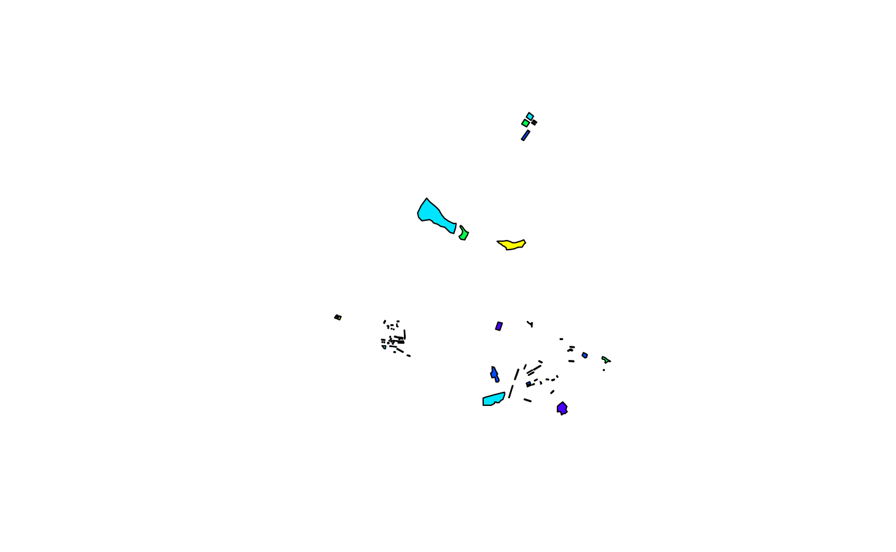

Case Study: Satellite Image Classification
Roberto Tatis-Muvdi, Michael Rustler
2022-05-19
Source:vignettes/case-study_satellite-image-classification.Rmd
case-study_satellite-image-classification.RmdImage segmentation for urban surfaces with random forest based on spectral signatures to build image classification model (random forest)
Define paths
# Load the R package
library(kwb.ml)
### define paths
path_list <- list(
local_dir = getwd(),
cloud_dir = "projects/keys/WP2_SUW_pollution_Jinxi/_DataAnalysis/gis",
site = "Jinxi",
data = "WP2_SUW_pollution_<site>",
gis = "<local_dir>/<data>/_DataAnalysis/gis",
pattern_image = 'input_image\\.img$',
pattern_groundtruth = 'input_groundtruth\\.*',
satellite_image = "<gis>/input_image.img",
groundtruth = "<gis>/input_groundtruth.shp"
)
paths <- kwb.utils::resolve(path_list)Image Files
This tutorial needs a one satellite input_image.img file which directly downloaded from the KWB Cloud.
Currently seven input files are required:
input_image.img(input: name of satellite image file)<input_groundtruth>.shp|dbf|cpg|prj|qpj|shx(input: groundtruth data)
Cloud
You can download the required files from the KWB cloud if you are a registered user with access to the folder projects/keys/WP2_SUW_pollution_Jinxi/_DataAnalysis/gis
For doing so follow the steps below:
Open
RStudioand runusethis::edit_r_environ()In the opened window add the required environment variables
NEXTCLOUD_URL = "https://<replace-with-kwb-cloud-url>"
NEXTCLOUD_USER = "<your-kwb-cloud-username>" # your username
NEXTCLOUD_PASSWORD = "your-nextcloud-app-password" ### see details belowFor creating <your-nextcloud-app-password>:
go to: https://replace-with-dwc-cloud-url/index.php/settings/user/security
scroll down to
create new app passwordselect a name e.g.
r-scriptand copy the token and replaceyour-nextcloud-app-password
- Finally you need to restart Rstudio and proceed with the code below:
required_files <- paste0(c(paths$pattern_image,
paths$pattern_groundtruth),
collapse = "|")
# Download .cbc and .bhd and .dis files
ml_files <- kwb.nextcloud::list_files(
paths$cloud_dir,
full_info = TRUE) %>%
dplyr::filter(stringr::str_detect(.data$file,
pattern = required_files))
#> Listing
#> Listing projects/keys/WP2_SUW_pollution_Jinxi/_DataAnalysis/gis
ml_files
#> file isdir etag
#> 1 input_groundtruth.cpg FALSE f549dbab383fb8eb163b613d9f4031c9
#> 2 input_groundtruth.dbf FALSE 4e0165b4b6969e196c69e560e3d89102
#> 3 input_groundtruth.prj FALSE f2cea503a02c98e8069d8390591ecdf9
#> 4 input_groundtruth.qpj FALSE b9bc0d871d32c3b9d4f59d75ec80223c
#> 5 input_groundtruth.shp FALSE c298b5624f5ee7dba32797d91cc572d0
#> 6 input_groundtruth.shx FALSE e52f7a2f50bad0fb0361488725b2efa1
#> 7 input_image.img FALSE 18e5bd87dcdb24e3d4c6653e8591f125
#> lastmodified fileid permissions size
#> 1 2020-07-29 08:27:08 185827 RMGDNVW 5
#> 2 2020-08-04 07:31:18 185831 RMGDNVW 1536
#> 3 2020-07-29 08:27:08 185829 RMGDNVW 432
#> 4 2020-07-29 08:27:08 185838 RMGDNVW 605
#> 5 2020-08-04 07:31:18 185834 RMGDNVW 12500
#> 6 2020-08-04 07:31:18 185830 RMGDNVW 660
#> 7 2020-07-29 08:55:38 185922 RMGDNVW 518763915
#> href
#> 1 /remote.php/dav/files/mrustl/projects/keys/WP2_SUW_pollution_Jinxi/_DataAnalysis/gis/input_groundtruth.cpg
#> 2 /remote.php/dav/files/mrustl/projects/keys/WP2_SUW_pollution_Jinxi/_DataAnalysis/gis/input_groundtruth.dbf
#> 3 /remote.php/dav/files/mrustl/projects/keys/WP2_SUW_pollution_Jinxi/_DataAnalysis/gis/input_groundtruth.prj
#> 4 /remote.php/dav/files/mrustl/projects/keys/WP2_SUW_pollution_Jinxi/_DataAnalysis/gis/input_groundtruth.qpj
#> 5 /remote.php/dav/files/mrustl/projects/keys/WP2_SUW_pollution_Jinxi/_DataAnalysis/gis/input_groundtruth.shp
#> 6 /remote.php/dav/files/mrustl/projects/keys/WP2_SUW_pollution_Jinxi/_DataAnalysis/gis/input_groundtruth.shx
#> 7 /remote.php/dav/files/mrustl/projects/keys/WP2_SUW_pollution_Jinxi/_DataAnalysis/gis/input_image.img
if(!dir.exists(paths$gis)) fs::dir_create(paths$gis, recurse = TRUE)
kwb.nextcloud::download_files(href = ml_files$href,
target_dir = paths$gis)
#> Splitting paths ... ok. (0.00s)
#> Removing the first 10 path segments ... ok. (0.00s)
#> Putting path segments together ... ok. (0.00s)
#> Downloading /remote.php/dav/files/mrustl/projects/keys/WP2_SUW_pollution_Jinxi/_DataAnalysis/gis/input_groundtruth.cpg ... ok. (0.48s)
#> Downloading /remote.php/dav/files/mrustl/projects/keys/WP2_SUW_pollution_Jinxi/_DataAnalysis/gis/input_groundtruth.dbf ... ok. (0.46s)
#> Downloading /remote.php/dav/files/mrustl/projects/keys/WP2_SUW_pollution_Jinxi/_DataAnalysis/gis/input_groundtruth.prj ... ok. (0.47s)
#> Downloading /remote.php/dav/files/mrustl/projects/keys/WP2_SUW_pollution_Jinxi/_DataAnalysis/gis/input_groundtruth.qpj ... ok. (0.47s)
#> Downloading /remote.php/dav/files/mrustl/projects/keys/WP2_SUW_pollution_Jinxi/_DataAnalysis/gis/input_groundtruth.shp ... ok. (0.48s)
#> Downloading /remote.php/dav/files/mrustl/projects/keys/WP2_SUW_pollution_Jinxi/_DataAnalysis/gis/input_groundtruth.shx ... ok. (0.46s)
#> Downloading /remote.php/dav/files/mrustl/projects/keys/WP2_SUW_pollution_Jinxi/_DataAnalysis/gis/input_image.img ... ok. (31.32s)
#> [1] "/Users/runner/work/kwb.ml/kwb.ml/vignettes/WP2_SUW_pollution_Jinxi/_DataAnalysis/gis/input_groundtruth.cpg"
#> [2] "/Users/runner/work/kwb.ml/kwb.ml/vignettes/WP2_SUW_pollution_Jinxi/_DataAnalysis/gis/input_groundtruth.dbf"
#> [3] "/Users/runner/work/kwb.ml/kwb.ml/vignettes/WP2_SUW_pollution_Jinxi/_DataAnalysis/gis/input_groundtruth.prj"
#> [4] "/Users/runner/work/kwb.ml/kwb.ml/vignettes/WP2_SUW_pollution_Jinxi/_DataAnalysis/gis/input_groundtruth.qpj"
#> [5] "/Users/runner/work/kwb.ml/kwb.ml/vignettes/WP2_SUW_pollution_Jinxi/_DataAnalysis/gis/input_groundtruth.shp"
#> [6] "/Users/runner/work/kwb.ml/kwb.ml/vignettes/WP2_SUW_pollution_Jinxi/_DataAnalysis/gis/input_groundtruth.shx"
#> [7] "/Users/runner/work/kwb.ml/kwb.ml/vignettes/WP2_SUW_pollution_Jinxi/_DataAnalysis/gis/input_image.img"
fs::dir_ls(paths$gis)
#> /Users/runner/work/kwb.ml/kwb.ml/vignettes/WP2_SUW_pollution_Jinxi/_DataAnalysis/gis/input_groundtruth.cpg
#> /Users/runner/work/kwb.ml/kwb.ml/vignettes/WP2_SUW_pollution_Jinxi/_DataAnalysis/gis/input_groundtruth.dbf
#> /Users/runner/work/kwb.ml/kwb.ml/vignettes/WP2_SUW_pollution_Jinxi/_DataAnalysis/gis/input_groundtruth.prj
#> /Users/runner/work/kwb.ml/kwb.ml/vignettes/WP2_SUW_pollution_Jinxi/_DataAnalysis/gis/input_groundtruth.qpj
#> /Users/runner/work/kwb.ml/kwb.ml/vignettes/WP2_SUW_pollution_Jinxi/_DataAnalysis/gis/input_groundtruth.shp
#> /Users/runner/work/kwb.ml/kwb.ml/vignettes/WP2_SUW_pollution_Jinxi/_DataAnalysis/gis/input_groundtruth.shx
#> /Users/runner/work/kwb.ml/kwb.ml/vignettes/WP2_SUW_pollution_Jinxi/_DataAnalysis/gis/input_image.img
paths$satellite_image
#> [1] "/Users/runner/work/kwb.ml/kwb.ml/vignettes/WP2_SUW_pollution_Jinxi/_DataAnalysis/gis/input_image.img"
paths$groundtruth
#> [1] "/Users/runner/work/kwb.ml/kwb.ml/vignettes/WP2_SUW_pollution_Jinxi/_DataAnalysis/gis/input_groundtruth.shp"Machine Learning
Input Data
Satellite Image
library(raster)
#> Loading required package: sp
library(rgdal)
#> Please note that rgdal will be retired by the end of 2023,
#> plan transition to sf/stars/terra functions using GDAL and PROJ
#> at your earliest convenience.
#>
#> rgdal: version: 1.5-32, (SVN revision 1176)
#> Geospatial Data Abstraction Library extensions to R successfully loaded
#> Loaded GDAL runtime: GDAL 3.5.0, released 2022/05/10
#> Path to GDAL shared files: /usr/local/Cellar/gdal/3.5.0/share/gdal
#> GDAL does not use iconv for recoding strings.
#> GDAL binary built with GEOS: TRUE
#> Loaded PROJ runtime: Rel. 9.0.0, March 1st, 2022, [PJ_VERSION: 900]
#> Path to PROJ shared files: /Users/runner/Library/Application Support/proj:/usr/local/opt/proj/share/proj:/usr/local/Cellar/proj/9.0.0_1/share/proj
#> PROJ CDN enabled: FALSE
#> Linking to sp version:1.4-7
#> To mute warnings of possible GDAL/OSR exportToProj4() degradation,
#> use options("rgdal_show_exportToProj4_warnings"="none") before loading sp or rgdal.
## Plot 'satellite image'
satellite_image <- raster::stack(paths$satellite_image)
raster::plotRGB(satellite_image)
Classification Dataset
### Training dataset
groundtruth <- raster::shapefile(paths$groundtruth)
#> Warning in OGRSpatialRef(dsn, layer, morphFromESRI = morphFromESRI, dumpSRS =
#> dumpSRS, : Discarded datum China_2000 in Proj4 definition: +proj=tmerc +lat_0=0
#> +lon_0=117 +k=1 +x_0=39500000 +y_0=0 +ellps=GRS80 +units=m +no_defs
### number of pre-classified polygons for each categorie
table(groundtruth$cover)
#>
#> pervious roof shadow street water
#> 10 45 3 9 3
### plot of pre-classified surfaces (used for model ML-training)
raster::plot(groundtruth, col = topo.colors(5))
Setup Model
Build a random forest machine learning model for classification of the following five urban surfaces: - roofs - streets - perivous areas - shadow (accounting for classification artifacts due to limited satellite image resolution) - water areas
# build classification model
kwb.ml::buildClassMod(
rawdir = paths$gis,
image = 'input_image.img',
groundTruth = 'input_groundtruth.shp',
groundTruthValues = list('roof' = 1,
'street' = 2,
'pervious' = 3,
'shadow' = 4,
'water' = 5),
spectrSigName = 'spectrSig.Rdata',
modelName = 'rForest.Rdata',
overlayExists = FALSE,
nCores = parallel::detectCores() - 1,
mtryGrd = 1:2,
ntreeGrd=seq(80, 150, by=10),
nfolds = 3,
nodesize = 3,
cvrepeats = 2)
#>
#> loading spatial data...
#> Warning in OGRSpatialRef(dsn, layer, morphFromESRI = morphFromESRI, dumpSRS =
#> dumpSRS, : Discarded datum China_2000 in Proj4 definition: +proj=tmerc +lat_0=0
#> +lon_0=117 +k=1 +x_0=39500000 +y_0=0 +ellps=GRS80 +units=m +no_defs
#>
#> done
#>
#> extracting spectral signatures of ground truth areas...
#> done
#>
#> saving overlay object...
#> done
#>
#> training model...note: only 2 unique complexity parameters in default grid. Truncating the grid to 2 .
#>
#>
#> done
#>
#> saving model...
#> done
# check model performance
load(file.path(paths$gis,"rForest.Rdata"))
caret::confusionMatrix(data = model$finalModel$predicted,
reference = model$trainingData$.outcome,
mode = 'prec_recall')
#> Confusion Matrix and Statistics
#>
#> Reference
#> Prediction 1 2 3 4 5
#> 1 26924 98 336 10 11
#> 2 184 4398 52 0 0
#> 3 413 135 57932 159 1456
#> 4 13 7 141 580 5
#> 5 54 8 3457 17 111736
#>
#> Overall Statistics
#>
#> Accuracy : 0.9685
#> 95% CI : (0.9677, 0.9692)
#> No Information Rate : 0.5439
#> P-Value [Acc > NIR] : < 2.2e-16
#>
#> Kappa : 0.947
#>
#> Mcnemar's Test P-Value : < 2.2e-16
#>
#> Statistics by Class:
#>
#> Class: 1 Class: 2 Class: 3 Class: 4 Class: 5
#> Precision 0.9834 0.94907 0.9640 0.777480 0.9693
#> Recall 0.9759 0.94662 0.9356 0.757180 0.9870
#> F1 0.9796 0.94784 0.9496 0.767196 0.9781
#> Prevalence 0.1326 0.02232 0.2975 0.003680 0.5439
#> Detection Rate 0.1294 0.02113 0.2784 0.002787 0.5369
#> Detection Prevalence 0.1316 0.02227 0.2887 0.003584 0.5539
#> Balanced Accuracy 0.9867 0.97273 0.9604 0.878190 0.9749
# classify image for roofs and streets
kwb.ml::predictSurfClass(rawdir = paths$gis,
modelName = 'rForest.Rdata',
image = 'input_image.img',
predName = 'classified_image.img')
#>
#> loading model...
#> done
#>
#> making predictions...
#> done
#>
#> writing output...
#> done